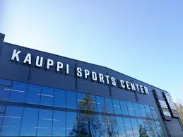
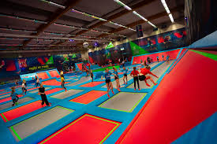
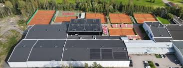
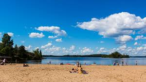

Ulkoilu ja luonto
Pyynikki, Kauppi ja monet muut ulkoilualueet tarjoavat kauniita ulkoilu reittejä ympäri vuoden. Kaupissa myös sisäliikuntaa.
Tampere tarjoaa monipuolisia aktiviteetteja luonnosta kulttuuriin ja urheiluun.

Pyynikki, Kauppi ja monet muut ulkoilualueet tarjoavat kauniita ulkoilu reittejä ympäri vuoden. Kaupissa myös sisäliikuntaa.

Trampoliini park Rushissa voi vaikka koko perhe pomppi ja riehua.

Tenniskeskuksella voit pelata tennistä ja padelia sisällä sekä ulkona

Kivoja uimarantoja ympäri kaupungin Näsi- ja pyhäjärvellä.